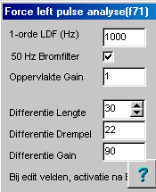

(FF2) RF 2, Onset Systolische Bloeddruk
|
Deze methode analyseert een positieve puls.
Kan bijvoorbeeld gebruikt worden voor de analyse van bloeddruk, plethysmograaf en spiercontraties.
|
De rode curve is het orginele signaal (in dit geval de kracht van een ratte spiervezel). Duidelijk is te zien dat het signaal verontreinigd is met een hoogfrequent modulatie (ongeveer 100 Hz), welke vermoedelijk afkomstig is van het lichtnet . De donker-blauwe curve is het gefilterde signaal op uitgangskanaal 1. In dit geval is een 50Hz notch filter gebruikt. Duidelijk is te zien dat het signaal enigszins wordt vertraagd als gevolg van de filtering, maar de vorm wordt niet of nauwelijks aangetast. Indien, om hetzelfde effect te verkrijgen, gefilterd zou zijn met een laagdoorlaatfilter, zou met name de opgaande flank van het signaal minder steil worden. Het gele signaal is de afgeleide van het gefilterde signaal. Door de wijze van afgeleide berekening, wordt het afgeleide signaal automatisch gefilterd. Het licht-blauwe signaal geeft de status van de detector aan. Op het moment dat deze de waarde 4 aannneemt (slechts 1 sample), zijn alle berekende waarden beschikbaar, bijvoorbeeld t.b.v. export. |
|
Het rode signaal is de afgeleide van het gefilterde signaal. Het blauwe signaal is het maximum van de afgeleide. Het gele signaal is het minimum van de afgeleide. Het groene signaal is het aantal samples vanaf het maximum signaal tootaan het minumum van de afgeleide. |
Ingangs Signalen
1 te analyseren signaal met positieve pulsen
|
Uitgangs Signalen |
De signalen 1,4,5,6, worden gekalibreerd volgens het ingangssignaal |
|
1=gefilterd signaal |
Het signaal kan worden gefilterd met een eerst orde laagdoorlaat fileter en of een moving avearge 50 Hz notch filter. |
|
2=afgeleide |
De afgeleide van het signaal wordt bepaald op het gefilterde signaal |
|
3=detector state |
0 = no pulse 1= positieve flank 2,3 = negatieve flank 4 = puls detectie gereed, alle uitgangsvariabelen zijn nu geldig. Deze toestand is slechts 1 sample geldig, zodat deze toestand speciaal geschikt is als voorwaarde voor de export. |
|
4=minimum |
Het minimum van het signaal wordt bepaald door vanaf het punt waar de pulsdetectie is gestart 0.2 seconde terug te lopen en te zoeken naar het minimum in het gefilterde signaal. |
|
5=maximum |
het maximum van het signaal |
|
6=max-min |
het verschil tussen maximum en minimum signaal |
|
7=oppervlakte stijgend |
het oppervlakte (de som van alle samples, t.o.v. de basislijn=minimum van het signaal). Met behulp van de "Oppervalket Gain" kan dit signaal verzwakt worden. |
|
8=samples stijgend |
Het aantal samples waarover het bovenstaande oppervlakte is berekend |
|
9=oppervalkte dalend |
|
|
10=samples dalend |
|
|
11=max afgeleide |
het maximum van de afgeleide |
|
12=min afgeleide |
|
|
13=Smax...dS/dtmin |
De afstand (in samples) van het maximum van het signaal tot aan de sterkste daling (minimum van de afgeleide) |
Instellingen
|
Hiernaast de instellingen zoals gebruikt bij het meten ene analyseren van de contartie van spiervezels, opgenomen met 500 Hz. LDF staat op 100 Hz en is daarmee dus uitgeschakeld. Nadat de optimale filtering is vastgesteld, worden de differentie instellingen gezet. Differentiatie vindt plaats middels de "average sloop methode", en dus hoe langer de lengte, hoe meer gefilterd de afgeleide zal zijn. Differentie gain is bedoeld om het signaal zichtbaar (en detecteerbaar) te maken. De differentie drempel is de detectie drempel van de pulsdetector en werkt op het versterkte afgeleide signaal. |
 |
© Copyright Instrumentele Dienst 
SM/GvV 05-02-2000